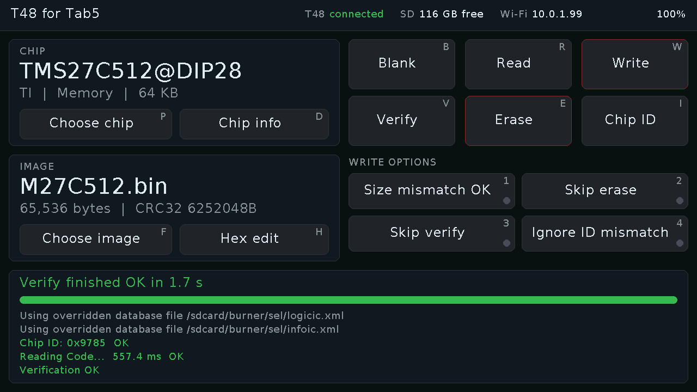

T48 for Tab5
Firmware v1.0: an M5Stack Tab5 and its keyboard as a stand-alone programmer for an XGecu T48. Source, docs and licence (GPL-3.0) on GitHub.

1. Install the firmware
- Use Chrome or Edge on a desktop (Web Serial is needed; Safari and Firefox do not have it).
- Connect the Tab5's USB-C port to the computer and switch the Tab5 on.
- Click Install below and choose the Tab5's port (it is usually called USB JTAG/serial debug unit).
If no port shows up or the install fails: hold the Tab5's power button to put it in download mode, then try again. Installing replaces whatever firmware the Tab5 had.
2. Prepare the SD card
- Download the SD card zip from the latest release
(
t48-for-tab5-sdcard-v1.0.zip). - Format a microSD card as FAT32 (the Tab5 cannot read exFAT; cards over 32 GB usually come as exFAT).
- Unzip it onto the card so the card has a
burnerfolder at its top level, and put the card in the Tab5.
3. Connect and set up
- Clip on the Tab5 Keyboard, plug the T48 into the Tab5's USB-A port, and restart the Tab5.
- Wi-Fi: the first time, the Tab5 opens a T48-for-Tab5-XXXX hotspot. Join it from a phone (press N on the Tab5 for a QR code); the setup page opens by itself. Pick your network and type its password.
- Press P to choose a chip, then B, R, W, V for blank check, read, write and verify. Upload ROM images from a browser at the address shown in the Tab5's header.